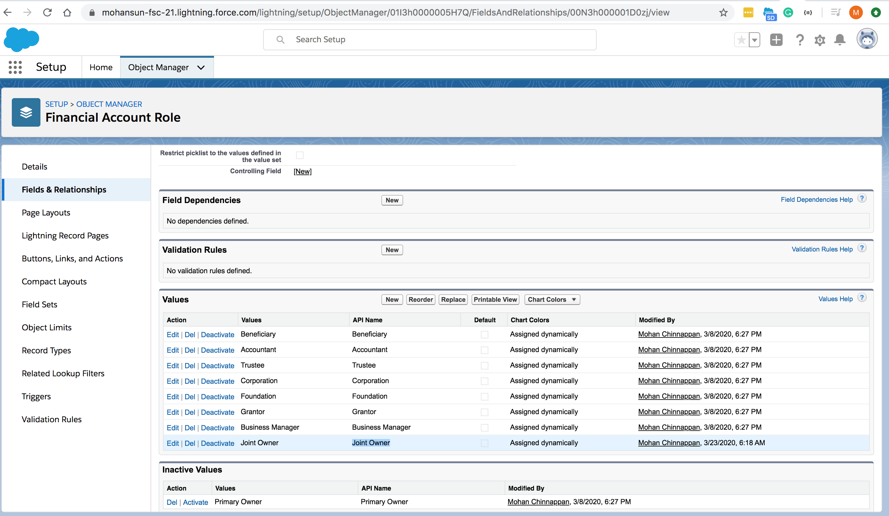

Toggle navigation
FSC FAQs - 3
Home
Help
Prev
Next
How to support multiple Joint owners for Financial Accounts (FA)?
Make use of FinServ__FinancialAccountRole__c (FAR):
Activate
Joint Owner
for Finserv__Role__c: 
References:
FAR Data ERD
FSC data model